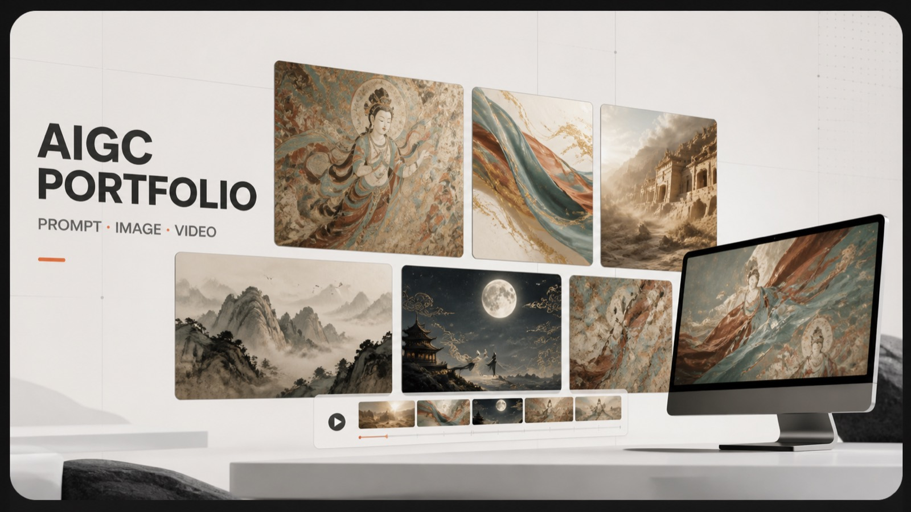
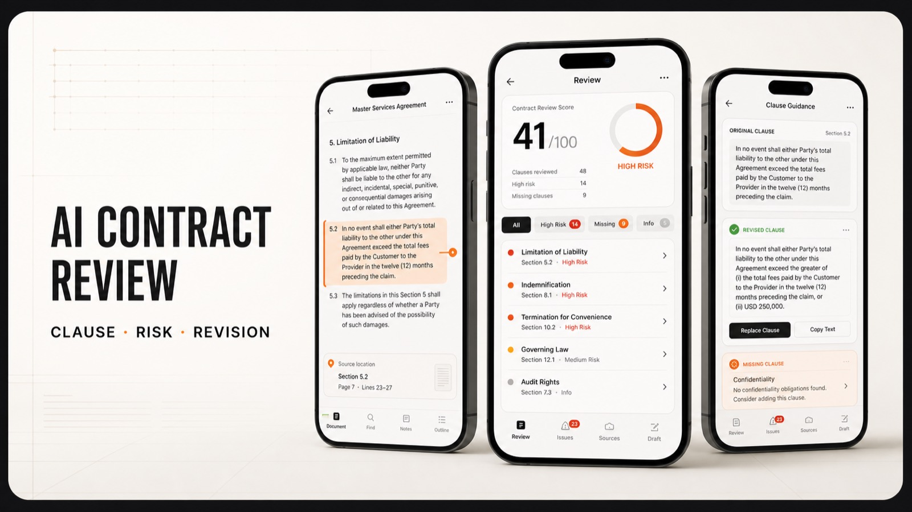

张昕煜ZHANG XINYU
写十年，看看会长成什么样。
欢迎来到我的思考现场。关于 AI、关于产品、关于一个人怎么在变化里保持长期。
ROLEAI 产品经理
START HERE
第一次来？这三篇最能说明我是谁。
WHAT I HAVE DONE
我做过的项目。
AI · HIRING
简历筛选 Agent
输入 JD 与简历，输出可审计的匹配评分、推进决策与针对性面试题。每条判断都指回简历原文，再由独立 Checker 回头查证据撑不撑得住。
Demo 可直接在线跑跑一遍 Demo ↗
AI · LEGAL DOCUMENT
AI 合同生成和审查助手
把合同切成条款逐条判风险，每条都指回原文，并给出可直接替换的条款文本。换个审查立场，同一份合同的评分和风险清单都会变。
Demo 可直接在线跑跑一遍 Demo ↗AI 法律检索助手
法律检索场景的问答与定位工具，把零散的法条、案例和检索意图对齐到同一套结构里。
Retrieval · RAG · QA暂无公开链接Night Repair 夜间修复
一个已经上线可访问的小产品，从想法、界面到部署由我完整走通一遍。
Web · Design · Deploy查看项目 ↗去文章 AI 味的 Skill
一个用于弱化文章模板感与机器腔的写作 Skill，重点处理空泛表达、重复句式和过度总结，让文字更自然，也更接近真实的人在表达。
划词的 Flick
一个面向阅读场景的划词工具，选中文本即可快速唤起解释、翻译或进一步操作，让信息处理停留在当前页面完成。
MY AI WORKFLOW
不是工具清单，是我怎么把它们串成一条流水线。
- 01
想清楚
Claude - 02
拆需求
Claude · 文档 - 03
生成
Codex - 04
审校验收
我自己 - 05
交付复盘
GitHub
[ AI PARTNERS ]
Claude
思维副驾策略、文案、架构——它搭骨架，我给灵魂。
Strategy · Writing · ArchitectCodex
代码施工我描述需求，它完成实现，我审稿、调方向、验收。
Frontend · Refactor · AutoGemini
文案 · 杂务邮件、翻译、纪要、摘要等日常文本处理。
Copy · Translate · Research[ CRAFT + INFRASTRUCTURE ]
VS Code
工作台写 prompt、文案与代码的第二大脑入口。
IDE · Markdown · ExtensionGitHub
生态与扩展插件、MCP 与 Skills 的发现和调试场。
Plugins · MCP · SkillsABOUT & CONNECT
与其介绍我是谁，不如说清楚什么情况下值得找我。
见万物、做实事、平己心、悟众生
我对什么感兴趣
- 输出、文字、表达
- AI 新型知识
- 底层逻辑和规律的研究
什么话题欢迎来找我
- 探讨相同或不同的观点
- 如何从其他行业过渡到 AI 产品经理
- 探索 AI 未来的发展
- LOCATION
- 中国 · 深圳
- BACKGROUND
- 法律 + AI 技术
- GITHUB
- 1367877593-ops